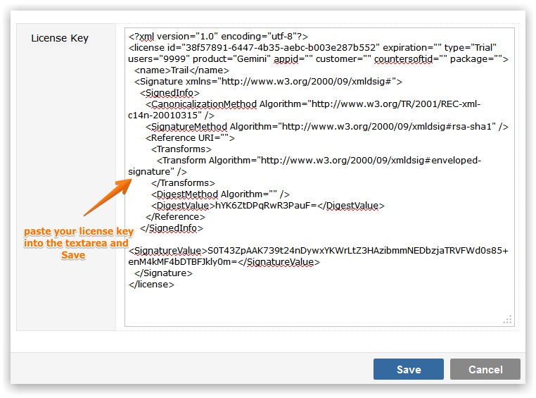

Access to modules such as Breeze, Sentry and Saucery, as well as restrictions on the number of users allowed to use the system is controlled by license. The license will always be emailed to you and takes the form of an XML file. You may have to enter multiple license codes as individual modules may require individual licenses.
To add a license, copy the XML license you will have received, navigate to the license tab under System, click on Add, paste the license code into the text area and Save.

If you receive multiple licenses by email please add them one license at a time.
NoteAll licenses give you access to free support and upgrades for 12 months.